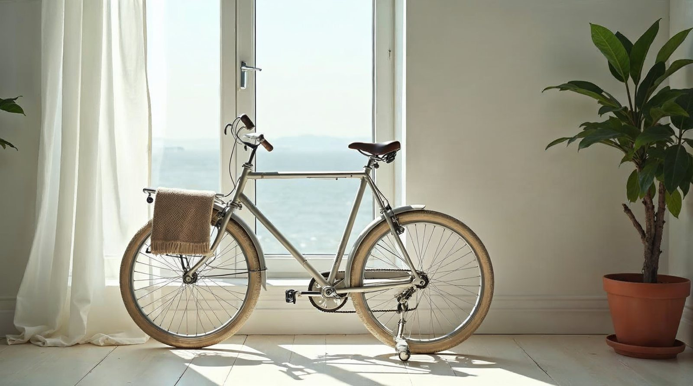
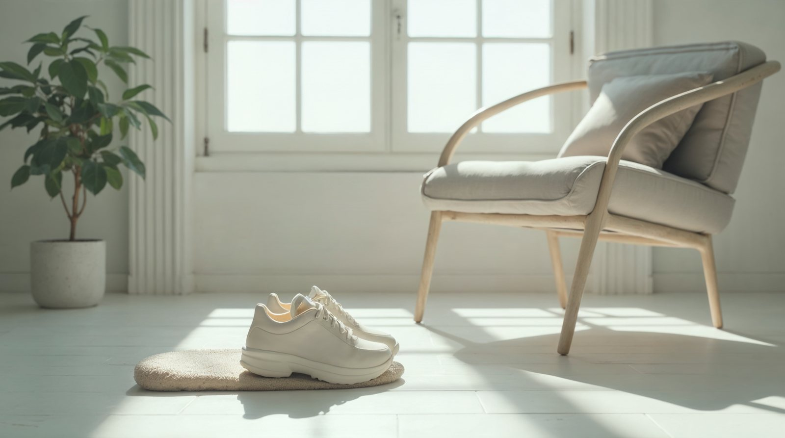
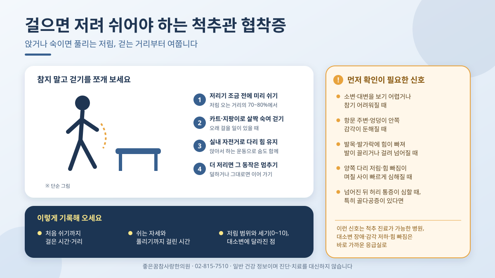

이종호 한의사 감수좋은꿈참사랑한의원 대표원장 (한의사 면허번호 19769)발행 2026-11-26 · 수정 2026-11-26
이 글의 차례
시장에 장을 보러 나섰는데 오백 미터도 못 가서 엉덩이부터 종아리까지 저릿하게 내려옵니다. 길가 화단 턱에 잠깐 걸터앉아 허리를 숙이고 있으면 신기하게 풀리고, 다시 일어나 걸으면 또 내려옵니다. 그렇게 쉬었다 걷기를 서너 번 하고 나면 장바구니보다 마음이 더 무겁습니다.
이렇게 걸을수록 다리가 저리거나 터질 듯 무거워지고, 앉거나 허리를 앞으로 숙이면 풀리는 모습은 척추관 협착증에서 흔히 보는 장면입니다. 저는 이런 분이 오시면 몇 분, 몇 미터를 걸으면 쉬게 되는지부터 여쭙고, 대소변과 다리 힘에 달라진 것은 없는지를 먼저 확인합니다.
소변이나 대변을 보기 어렵거나 참기 어려워졌다면, 항문 주변이나 엉덩이 안쪽 감각이 둔해졌다면, 발목이나 발가락에 힘이 빠져 발이 끌린다면 이야기가 다릅니다. 이때는 한의원 진료를 기다리지 말고 척추 진료가 가능한 병원이나 가까운 응급실로 먼저 가셔야 합니다.
진료실에서 이런 말씀을 자주 듣습니다. 걷는 게 제일 좋다고 해서 걸으려고 하는데, 걸을 수가 없으니 어떻게 하느냐고요. 운동을 하라는 말이 오히려 마음을 찌르는 분들이 계십니다.
다리가 저려 멈춰 선 모습을 남이 볼까 봐 괜히 가게 진열대를 구경하는 척하게 된다는 말씀도 종종 듣습니다. 그 마음이 어떤지 압니다. 몸이 예전 같지 않다는 것을 매일 길 위에서 확인하는 일은 생각보다 사람을 지치게 합니다.
왜 걸으면 다리가 저리고, 앉으면 풀릴까요
척추 뒤쪽에는 신경이 지나가는 통로가 있습니다. 이 통로를 척추관이라고 부릅니다. 나이가 들면서 디스크가 납작해지고, 뒤쪽 관절이 두꺼워지고, 인대가 굵어지면 통로가 조금씩 좁아질 수 있습니다. 이것이 척추관 협착증입니다.
통로가 좁아도 앉아 있거나 허리를 살짝 숙이면 공간이 조금 넓어집니다. 반대로 서서 허리를 곧게 펴거나 뒤로 젖히면 공간이 더 좁아집니다. 그래서 걷거나 오래 서 있으면 신경이 눌리면서 엉덩이와 다리가 저리고, 앉거나 숙이면 풀리는 일이 되풀이됩니다.
마트에서 카트를 밀 때는 오래 걸을 수 있는데 맨몸으로 걸으면 금방 쉬어야 한다는 분이 많습니다. 자전거는 탈 만하다는 분도 계시지요. 모두 허리를 살짝 숙인 자세라는 공통점이 있습니다. 이 이야기를 들으면 저는 협착 쪽에 무게를 둡니다.
저림은 한쪽 다리에만 오기도 하고 양쪽에 함께 오기도 합니다. 저리다, 시리다, 터질 것 같다, 다리에 힘이 쭉 빠진다, 표현도 사람마다 다릅니다. 처음에는 오래 걸을 때만 그러다가, 조금씩 걸을 수 있는 거리가 짧아지는 경우가 많습니다.
날이 추워지면 더 빨리 저린다는 말씀도 자주 듣습니다. 찬 바람에 몸이 움츠러들고 근육이 굳으면 같은 거리도 더 버겁게 느껴지기 쉽습니다. 겨울에는 허리와 엉덩이, 종아리를 따뜻하게 감싸고 나가시라고 말씀드립니다.
허리 하나만 문제인 경우는 드뭅니다. 등이 굳어 잘 펴지지 않거나 고관절이 뻣뻣하면, 걸을 때 허리가 그 몫까지 떠안아 더 젖혀지기 쉽습니다. 그래서 저는 협착이 의심되는 분의 등과 골반, 고관절이 움직이는 모습까지 함께 봅니다.
한의학에서는 허리와 다리의 저림을 기혈이 잘 흐르지 못하는 모습으로 보고, 나이가 들며 허리를 받치는 힘이 줄어드는 것과 이어서 살핍니다. 몸이 차가운지, 잘 붓는지, 잠과 소화는 어떤지도 함께 봅니다. 같은 저림이라도 몸 전체의 상태에 따라 버티는 힘이 다르기 때문입니다.
디스크와 협착증, 이렇게 나누어 봅니다
다리가 저린다고 하면 많은 분이 먼저 디스크를 떠올리십니다. 둘 다 허리에서 신경이 눌려 다리가 저리는 것이라 헷갈리기 쉽지만, 저림이 심해지는 자세와 상황이 꽤 다릅니다.
허리 디스크는 앉아 있거나 허리를 숙일 때, 기침이나 재채기를 할 때 다리로 찌릿하게 뻗치는 경우가 많습니다. 비교적 젊은 나이에 무거운 것을 들다 갑자기 시작되는 일도 흔합니다.
디스크의 신호는 허리 디스크 초기 신호와 다리 저림은 어떻게 구분하나요?에 따로 정리해 두었습니다.
협착증은 반대입니다. 앉아 있을 때는 편하고, 서 있거나 걸을 때 심해지며, 앉거나 숙이면 몇 분 안에 풀리는 편입니다. 50대 이후에 서서히 시작되는 경우가 많고요. 물론 디스크와 협착이 함께 있는 분도 적지 않아, 자세만으로 단정하지는 않습니다.
걸을 때 다리가 아파 쉬어야 하는 것이 허리 신경 때문이 아니라 다리 혈관 때문일 때도 있습니다. 혈관 쪽이라면 앉지 않고 그냥 서서 쉬기만 해도 풀리는 경우가 많고, 발이 유난히 차갑거나 색이 창백하고, 발등 맥이 약하게 만져지기도 합니다.
담배를 오래 피우셨거나 당뇨, 고혈압, 고지혈증이 있다면 혈관 쪽도 꼭 함께 확인해야 합니다. 저는 다리가 저린 분의 발등과 발목 안쪽 맥도 짚어 보고, 의심되면 혈관 검사가 가능한 병원을 먼저 안내합니다.
엉덩이 깊은 곳이 아프면서 다리 뒤로 당기는 경우, 고관절 자체가 아파 사타구니 쪽이 불편한 경우도 비슷하게 느껴질 수 있습니다. 그래서 허리만 보지 않고 고관절을 돌려 보고, 엉덩이 근육을 눌러 보며 차례로 나누어 봅니다.
스스로 점검해 보세요
- 걷기 시작하고 몇 분 지나면 엉덩이나 다리가 저리거나 무거워진다
- 앉거나 허리를 앞으로 숙이면 몇 분 안에 풀린다
- 마트 카트를 밀거나 자전거를 탈 때는 비교적 오래 버틴다
- 허리를 뒤로 젖히면 다리 쪽이 더 불편하다
- 걸을 수 있는 거리가 몇 달 사이 조금씩 짧아졌다
- 밤에 누워 있을 때는 오히려 편한 편이다
해당하는 줄에 표시해 오시면 그 줄부터 이야기를 시작하겠습니다. 다만 대소변의 변화나 발이 끌리는 느낌이 함께 있다면, 이 목록보다 아래 '먼저 확인이 필요합니다'를 먼저 봐 주세요.
먼저 이렇게 여쭙니다
처음부터 정확히 설명하지 못하셔도 괜찮습니다. 아래 질문을 떠올려 보시면 진료실에서 이야기가 쉽게 풀립니다.
- 몇 분, 대략 몇 미터를 걸으면 쉬어야 하나요? 쉬는 자세는 앉기인가요, 서서 쉬기인가요?
- 앉거나 허리를 숙이면 몇 분 만에 풀리나요? 카트나 자전거는 어떤가요?
- 저림은 한쪽인가요, 양쪽인가요? 엉덩이에서 어디까지 내려오나요?
- 소변이나 대변을 보는 데 달라진 것이 있나요? 발이 끌리거나 슬리퍼가 잘 벗겨지나요?
- 밤에 잠은 어떠신지, 소화와 대변, 몸이 찬지 더운지도 여쭙습니다.
대소변을 왜 묻는지 궁금해하시는 분이 많습니다. 그 이유는 허리가 아파서 왔는데 대변과 소변은 왜 묻나요?에 적어 두었습니다. 쑥스러운 질문이지만 허리 신경을 살피는 데 꼭 필요한 이야기입니다.

일상에서 먼저 해 볼 수 있는 것
걷기가 좋다고 해서 참고 오래 걸을 필요는 없습니다. 협착이 있는 분께 저는 걷기를 쪼개시라고 말씀드립니다. 저리기 시작할 때까지 버티지 말고, 그 조금 전에 미리 앉아 쉬는 것입니다.
- 저림이 오는 거리의 70~80% 지점에서 미리 쉬고, 걷기를 여러 번으로 나누기
- 오래 걸을 일이 있으면 카트나 지팡이, 보행 보조기를 써서 허리를 살짝 숙인 자세로 걷기
- 실내 자전거처럼 앉아서 하는 운동으로 다리 힘과 숨을 유지하기
- 허리를 뒤로 크게 젖히는 체조나 엎드려 상체를 드는 동작은 저림이 심해지면 멈추기
- 누워서 무릎을 가슴 쪽으로 천천히 당겨 엉덩이와 허리 뒤를 부드럽게 늘이기
- 오래 서서 설거지할 때는 낮은 발판에 한쪽 발을 번갈아 올려 두기
어느 동작이든 기준은 같습니다. 하고 나서 다리 저림이 덜하거나 그대로면 이어 가고, 더 저리거나 내려오는 범위가 넓어지면 그 동작은 멈추세요. 몸이 시원하게 반응하는지, 불편해지는지를 따라가시면 됩니다.
골다공증이 있거나 허리 수술을 받으신 분은 무릎을 당기는 동작도 먼저 진료받은 곳에 여쭈어 보고 시작하세요. 당뇨가 있거나 발과 다리 감각이 둔한 분은 저린 다리에 핫팩이나 전기장판을 오래 대 두지 마세요. 뜨거운 줄 모르는 사이 저온 화상을 입기 쉽습니다.
다리 힘을 지키는 일도 중요합니다. 걷기가 힘들어 집에만 계시면 다리 근육이 금세 줄어듭니다. 의자에서 천천히 일어섰다 앉기, 벽을 짚고 발뒤꿈치 들기처럼 허리를 젖히지 않는 동작으로 조금씩 이어 가 보세요.
걷기를 다시 시작하실 때는 60대에 걷기 운동을 새로 시작할 때 무릎과 허리는 어떻게 점검하나요?도 함께 보셔도 좋습니다.
예를 들면 이런 경우입니다
실제 어느 분의 사연이 아니라, 진료실에서 자주 보는 모습을 바탕으로 그려 본 장면입니다.
예를 들어 아침 등산을 오래 해 오던 분이 어느 날부터 평지에서도 다리가 무거워 자주 쉬게 되는 경우가 있습니다. 이럴 때는 걸을 수 있는 거리와 쉬는 자세를 먼저 적어 보시고, 혈관 쪽 확인이 필요한지도 함께 살핍니다.
예를 들어 허리 수술을 받고 몇 년 잘 지내다가 다시 다리가 저리기 시작한 경우도 있습니다. 이때는 수술 기록과 최근 영상 검사를 가져오시도록 부탁드립니다.
허리 수술을 받고 시간이 지나 다리 저림이 다시 생겼을 때, 진료 전에 무엇을 알아 두면 좋을까요?에 준비할 것을 정리해 두었습니다.
예를 들어 하루 종일 서서 일하는 분이 오후만 되면 양쪽 종아리가 저리고, 퇴근길 버스에서 앉으면 풀리는 경우도 있습니다. 서 있는 자세와 발판 쓰기, 쉬는 시간 나누기부터 함께 정해 봅니다.
한의원에서 함께 살필 수 있는 경우
- 병원에서 척추관 협착증 진단을 받았고, 대소변 이상이나 근력 저하 없이 저림과 통증이 이어지는 경우
- 수술까지는 필요 없다는 설명을 들었지만 걷는 거리가 짧아 생활이 불편한 경우
- 허리와 함께 엉덩이, 종아리 근육이 늘 굳어 있고 잠까지 설치는 경우
- 몸이 차고 잘 붓거나, 소화와 잠이 함께 흔들리는 경우
좋은꿈참사랑한의원에 처음 오시면 언제부터, 얼마나 걸으면 저린지, 어떤 자세에서 풀리는지부터 듣고, 위에 적은 먼저 확인이 필요한 신호가 없는지 확인합니다. 받으신 영상 검사 결과와 드시는 약 목록이 있다면 가져와 주세요.
그다음 양손을 올려 달라고 말씀드립니다. 저는 처음 오신 분이든 다시 오신 분이든 모든 분께 맥을 짚습니다. 맥을 짚는 동안 잠과 소화, 대변과 소변, 몸이 찬지 더운지를 여쭙고, 필요하다고 판단되면 혀도 봅니다.
이어서 서서 허리를 숙이고 젖히는 모습, 걷는 모습, 발뒤꿈치와 발끝으로 서 보는 모습을 봅니다. 다리 감각과 힘, 무릎과 발목 반사를 확인하고, 발등 맥도 짚어 봅니다. 엉덩이와 허리 주변의 굳은 곳을 손으로 찾습니다.
이렇게 살핀 내용을 바탕으로 침, 약침, 추나, 한약 상담 가운데 지금 몸에 맞는 방법을 함께 정합니다. 한약을 상의할 때는 체형과 추위를 타는지, 붓기, 잠과 소화를 함께 보고 정합니다. 치료 중에는 시원한지, 불편한지 자주 여쭙습니다.
영상 검사나 척추 진료가 먼저 필요하다고 판단되면 왜 그런지 설명드리고 안내합니다. 다시 오시면 지난번 이후 걸을 수 있었던 거리와 쉬었던 횟수부터 이어서 여쭙습니다.

이렇게 기록해 오시면 상담이 쉬워집니다
협착증은 날마다, 날씨마다 조금씩 다르게 느껴집니다. 그래서 기억보다 기록이 힘이 됩니다. 2~3주만 한 줄씩 적어 보세요.
- 오늘 걸은 길과 처음 쉬어야 했던 시간(분) 또는 거리(정류장 몇 개, 전봇대 몇 개처럼)
- 쉬는 자세(앉기, 숙이기, 서서 쉬기)와 풀리는 데 걸린 시간
- 저림이 내려온 범위(엉덩이, 허벅지, 종아리, 발)와 세기(0~10)
- 밤에 깬 횟수, 다리가 저려 깼는지
- 소변과 대변에서 달라진 점, 드신 진통제 이름과 먹은 날
휴대폰 걸음 수 기록이 있다면 그것도 좋은 자료입니다. 빠진 날이 있어도 괜찮습니다. 기억나는 만큼만 적어 오시면 나머지는 제가 여쭙겠습니다.
이런 증상은 먼저 확인이 필요합니다
- 소변을 보기 어렵거나 참기 어려워진 경우, 대변을 참기 어려워진 경우
- 항문 주변이나 엉덩이 안쪽, 성기 주변 감각이 둔해진 경우
이런 신호가 있으면 한의원보다 가까운 병원이나 응급실을 먼저 찾으세요.
몇 걸음마다 멈춰 서야 하는 길을, 그래도 오늘까지 걸어오셨습니다. 그 걸음이 조금 덜 서럽도록, 쉬는 법과 걷는 법을 함께 다시 짜 보겠습니다. 다음에 오시면 지난번 이후 처음 쉬기까지 몇 분을 걸으셨는지부터 여쭙겠습니다.

여쭙는 것
- 몇 분, 대략 몇 미터를 걸으면 쉬어야 하나요? 쉬는 자세는 앉기인가요, 서서 쉬기…
- 앉거나 허리를 숙이면 몇 분 만에 풀리나요? 카트나 자전거는 어떤가요?
- 저림은 한쪽인가요, 양쪽인가요? 엉덩이에서 어디까지 내려오나요?
생활에서 해 볼 것
- 저림이 오는 거리의 70~80% 지점에서 미리 쉬고, 걷기를 여러 번으로 나누기
- 오래 걸을 일이 있으면 카트나 지팡이, 보행 보조기를 써서 허리를 살짝 숙인 자세로…
- 실내 자전거처럼 앉아서 하는 운동으로 다리 힘과 숨을 유지하기
한의원에서 함께 살필 것
- 병원에서 척추관 협착증 진단을 받았고, 대소변 이상이나 근력 저하 없이 저림과 통증…
- 수술까지는 필요 없다는 설명을 들었지만 걷는 거리가 짧아 생활이 불편한 경우
- 허리와 함께 엉덩이, 종아리 근육이 늘 굳어 있고 잠까지 설치는 경우
먼저 확인이 필요한 신호
- 소변을 보기 어렵거나 참기 어려워진 경우, 대변을 참기 어려워진 경우
- 항문 주변이나 엉덩이 안쪽, 성기 주변 감각이 둔해진 경우
한눈에 보는 표
| 구분 | 핵심 |
|---|---|
| 여쭙는 것 | 몇 분, 대략 몇 미터를 걸으면 쉬어야 하나요? 쉬는 자세는 앉기인가요, 서서 쉬기인가요? 앉거나 허리를 숙이면 몇 분 만에 풀리나요? 카트나 자전거는 어떤가요? |
| 생활에서 해 볼 것 | 저림이 오는 거리의 70~80% 지점에서 미리 쉬고, 걷기를 여러 번으로 나누기 오래 걸을 일이 있으면 카트나 지팡이, 보행 보조기를 써서 허리를 살짝 숙인 자세로 걷기 |
| 한의원에서 함께 살필 것 | 병원에서 척추관 협착증 진단을 받았고, 대소변 이상이나 근력 저하 없이 저림과 통증이 이어지는 경우 수술까지는 필요 없다는 설명을 들었지만 걷는 거리가 짧아 생활이 불편한 경우 |
| 먼저 확인이 필요한 신호 | 소변을 보기 어렵거나 참기 어려워진 경우, 대변을 참기 어려워진 경우 항문 주변이나 엉덩이 안쪽, 성기 주변 감각이 둔해진 경우 |
자주 묻는 질문
척추관 협착증과 허리 디스크는 어떻게 다른가요?
디스크는 앉아 있거나 숙일 때, 기침할 때 다리로 뻗치는 경우가 많고, 협착증은 서 있거나 걸을 때 심해지고 앉거나 숙이면 풀리는 편입니다. 둘이 함께 있는 경우도 있어 진찰과 영상 검사로 나누어 봅니다.
다리가 저려도 걷기 운동을 계속해야 하나요?
참고 오래 걷기보다 저림이 오기 조금 전에 미리 쉬며 여러 번 나누어 걷는 편을 권합니다. 카트나 보행 보조기를 쓰거나 실내 자전거로 대신하는 방법도 있습니다.
협착증이 있으면 추나를 받아도 되나요?
진찰 뒤 허리와 골반, 고관절 상태를 보고 적용 여부와 방법을 정합니다. 골다공증이 있거나 수술을 받으셨다면 먼저 알려 주세요. 강한 자극이 부담스러운 분께는 부드러운 방법을 고릅니다.
어떤 경우에 병원에 먼저 가야 하나요?
소변이나 대변이 불편해졌거나, 엉덩이 안쪽 감각이 둔해졌거나, 발목이나 발가락 힘이 빠지면 척추 진료나 가까운 응급실이 먼저입니다.
좋은꿈참사랑한의원은 재진 때 지난번 이야기부터 이어서 여쭙니다. 진료시간과 예약은 오시는 길에서 확인하세요.
어디서 상담받을 수 있나요?
좋은꿈참사랑한의원은 서울 동작구 만양로2길 2 신성빌딩 3층·5층(서울 동작구 상도동, 7호선 상도역 3번 출구 근처)에 있습니다. 한의사 3명(이종호 대표원장, 조영기 수석진료원장, 정원영 진료원장)이 진료합니다. 진료시간은 평일 09:30~20:00(점심 13:00~14:00), 토·일·공휴일 09:30~15:00이며, 방문 전 전화로 확인을 권합니다. 예약은 네이버 예약, 카카오톡 상담, 전화 02-815-7510로 받습니다.
이 글은 일반적인 건강 정보이며 개인의 진단이나 치료를 대신하지 않습니다. 증상이 있거나 복용 중인 약이 있다면 진료를 통해 확인하세요. 치료 효과는 개인마다 다를 수 있습니다.
작성 기준: 일반적으로 알려져 있는 건강 정보를 참고해 정리했습니다(대표원장 감수). 증상 기록은 1~2주 동안 하루 1회, 비슷한 시간에 적어 오시면 지난 상태와 비교하기 쉽습니다.